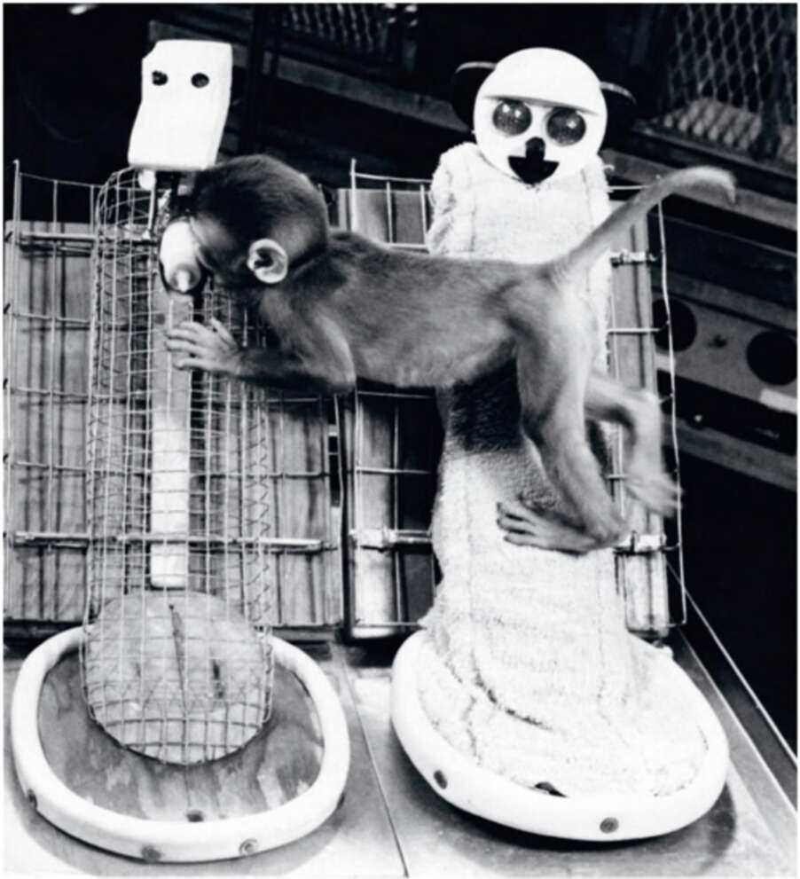

41. One of Harlow’s orphaned monkeys clings to the cloth mother even while sucking milk from the metal mother. Follow-up research showed that Harlow’s orphaned monkeys grew up to be emotionally disturbed even though they had received all the nourishment they required. They never fitted into monkey society, had difficulties communicating with other monkeys, and suffered from high levels of anxiety and aggression. The conclusion was inescapable: monkeys must have psychological needs and desires that go beyond their material requirements, and if these are not fulfilled, they will suffer greatly. Harlow’s infant monkeys preferred to spend their time in the hands of the barren cloth mother because they were looking for an emotional bond and not only for milk. In the following decades,
